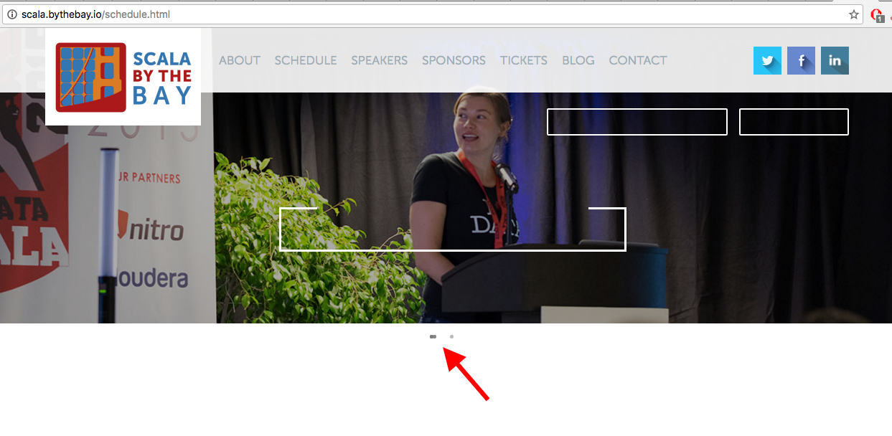
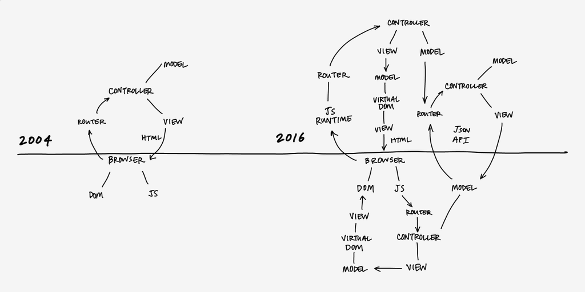
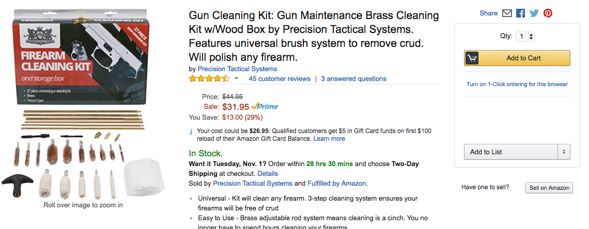

The Client-Side Apocalypse
Joe Barnes
@joescii
Follow along at http://localhost
Powered by
- Started Scala in 2012
- Built PartQuest.com 2014-16
- Developed lift-ng in parallel
- Lift committer 2015
- Currently backend and devops for go90 at AOL
ἀποκάλυψις
An apocalypse, translated literally from Greek, is
through the concealed
meaning a disclosure of knowledge, i.e.,
a lifting of the veil or revelation.
-wikipedia
So what happens when we render client-side?
http://youraddress.com

important-crap.js
actual-important-crap
Keep 'em entertained with a spinner!
(Don't mention we had to fetch it too)

No big deal, it's 2016 and the internet is fast and reliable
2016 internet

Somewhere IRL, probably
True story
Even if the internet WAS always fast and reliable...

Who here loves JS???
NO ONE!!!

Thank you, Sébastien!
- Transpilation => Bloated JS payload
- Not a compiled langauge
- Transmitted and distributed globally
- To inefficient devices producing heat
Global warming...

...and it is YOUR fault
Jokes aside, lots of opportunities for failure
What if any of those round-trips fail?
Progressive enhancement
- The page *just works*
- If other capabilities are available, it works better
Did you know...
a browser can redirect without javascript?
See <a href="(url)">
Did you know...
a browser can send data without javascript?
See <form>
Three things you can send to define your application:
- HTML
- JavaScript
- Cascading Style Sheets
How do they compare in terms of capability/power?
Clearly JS is the most powerful
So that's what we should use, right?
Rule of Least Power
[choose] the least powerful language suitable for a given purpose
- W3C "The Rule of Least Power"
Client-side rendered apps are only useful for a human with a powerful heat-producing device on a reliable network.
Kinda like applets and flash!
Other consumers such as search engines can't consume your content
Do we really want a stateful client??
Effectively gives us a distributed system
Synchronizing data in a distributed system is an enormous challenge
- Rylan Dirksen, 8th Light
Anybody here like to update the view and tell the server in the background?
What if that fails?
And your user isn't tech savvy
And they're using AOL dialup?
And they're ordering THIS!

And you insist you put it in the cart

Upon searching for something else, the cart is empty!
Now what do you expect this user to think?
BITCH SNATCHED IT FROM MY BUGGY!!!

Oh and she was buying a gun cleaning kit...
What if instead of depending on facebook to teach the world to not trust web apps...
...we built trust worthy apps?